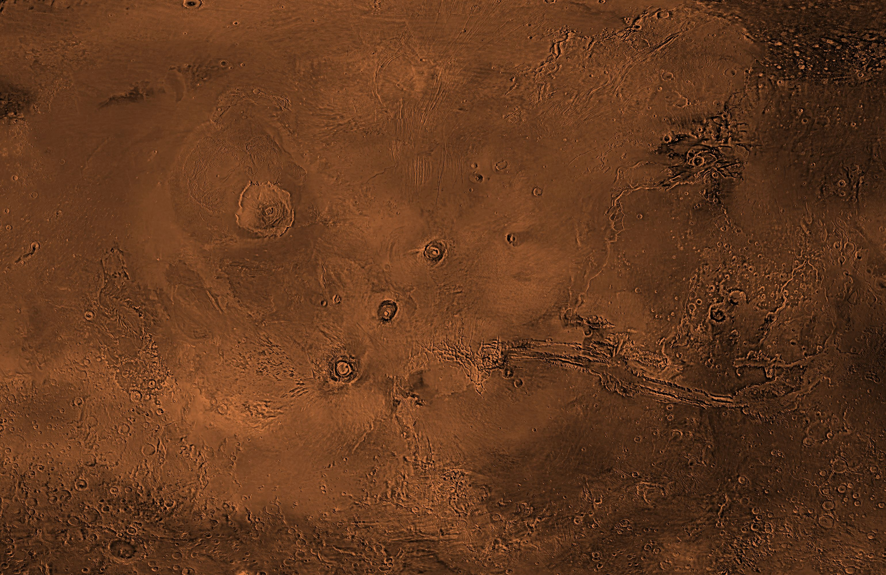
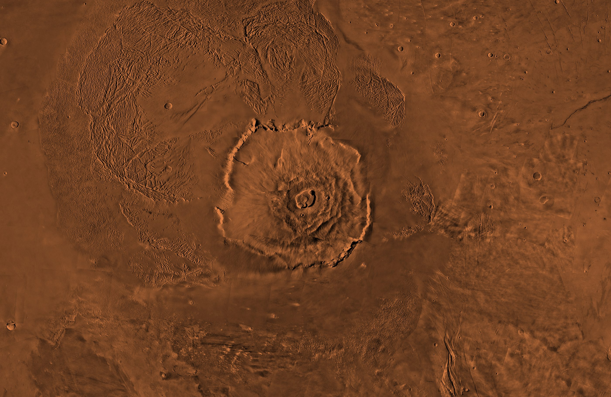

Engineer, then editor, then producer, now freelance. Still climbing.
My climb is one camera move now, and the road loops once and a bit round the mountain on a gentle slope, so "now" sits lower. Clicking a milestone flies the camera round the mountain to it. The ground runs on past the edges and fades out. Milestones carry icons. The mountain starts close with three stops, then pulls back until half of Mars is in view: the other giant volcanoes, the great canyon and the first landing site. A soft light and four corner marks replace the circles. Facts are from memory of NASA and USGS pages and get a source each before the build.
Eclipse only. The light and the dark shoulder now drift against each other, and a soft noise moves through the light like slow smoke. The chips change how much. The three small panels are the same ground with the light somewhere else, so each page can have its own without leaving the family. Say which movement and noise feel right, and which placement goes where.
The same fourteen spines, placed in three groups (film, making things, design) with a book leaning at the end of a group, two lying flat, and a small model of the mountain built from contour lines as the bookend. Behind them is the Eclipse light, so the shelf belongs to the same world as the map. Two things to stand on: a thin horizon line, or a ledge drawn as layers of Martian rock. Hover a book to lift it.